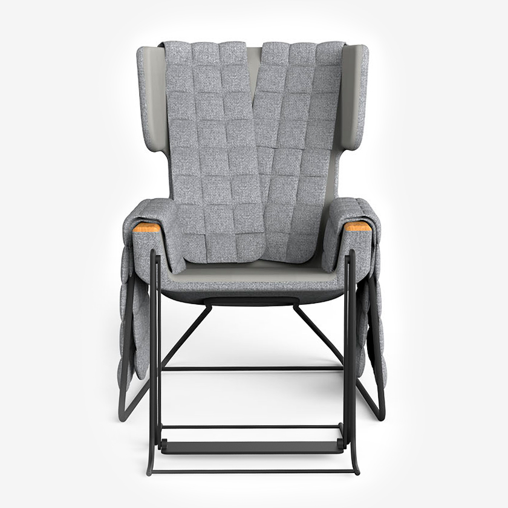

ABRACE Fodgynge

Beskrivelse
Fodgyngen passer til ABRACEs stol, og fungerer som et tilkøb hertil. Det er ikke muligt at montere den på andre lænestole på markedet.
Den aktiverer underben og fødder i en ensartet bevægelse, der kan afhjælpe rastløshed samt give ro i kroppen.
Fodgyngen kan nemt gemmes væk under stolen, og hives frem efter behov.
Rengøring: Kan aftørres med en fugtig, hårdt opvredet klud.
Sort, metal
3.735 DKK
Køb
Andre har tilkøbt